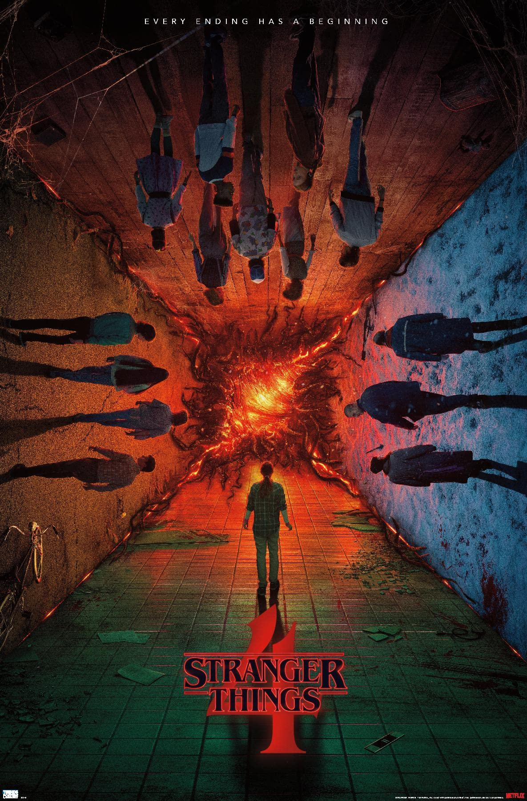

Характеристики
- Годы выхода: 2016–н.в.
- Сезонов: 4+
- Жанры: Фантастика, Триллер, Драма
- Страна: США
- Создатели: Братья Даффер
Описание
В тихом городке пропадает мальчик, а его друзья сталкиваются с тайной лабораторией и параллельной реальностью.